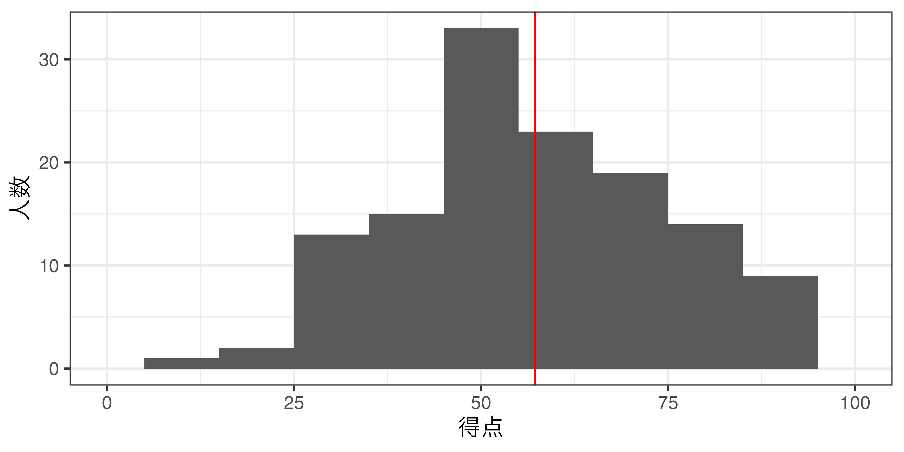

16/後期の導入
政治過程論
2026-09-17
出席登録をお願いします

今日の目次
- はじめに
- 成績評価
- 期末試験の講評
- 前期のふりかえり
- 後期で学ぶこと
- まとめ
はじめに
本日の目的と到達目標
目的
前期の内容を復習するとともに、後期での学びに備える。
到達目標
- 前期で学んだ重要だと思う概念・理論・モデルにつき3つ挙げ、自分の言葉で説明できる。
- 前期期末試験の出来を自分の言葉で説明できる。
- 後期で学ぶ内容の全体像を説明できる。
本日の授業の位置付け

成績評価
当初の評価項目
試験（50%）…筆記試験を前期と後期、合計2回実施（25×2=50%）
平常点（30%）⋯事前学習と事後学習に対する取り組み（WebClass上）
- 事前学習（教科書）のチェックフォーム（授業開始まで；10%）
- 100字程度のリアクションペーパー（金曜日まで；20%）
復習セッション（20%）⋯授業内容のふりかえり（合計2回、10×2=20％）
- 5〜6人程度の班を作り、割り当てられた回の授業内容をスライドにまとめる
- スライド相互評価（10％）
新しい評価項目
試験（60%）…筆記試験を前期と後期、合計2回実施（30×2=50%）
平常点（40%）⋯事前学習と事後学習に対する取り組み（WebClass上）
- 事前学習（教科書）のチェックフォーム（授業開始まで；10%）
- 100字程度のリアクションペーパー（金曜日まで；30%）
期末試験の講評
アンケート
7月30日に実施した試験について思い出してください。
思い出せる範囲の感覚で構いませんので、全体的な難易度を1（ものすごく簡単）から5（ものすごく難しい）で評価してください。
WebClassで回答
試験の結果
2026年7月30日2限実施
全体得点：
- 平均57.2点
- 標準偏差18.4点
- 範囲：0〜95点
各問題の平均
- 問1（選択問題）…14.9/20
- 問2（計算問題）…18.7/20
- 問3（記述問題・基礎）…15.0/30
- 問4（記述問題・応用）…9.1/30
期末試験の解説
問1 選択問題
- コロンビア・モデルは、宗教・職業・居住地域などの社会的属性が投票行動に影響すると考える。（◯）
- 二次元的権力観とは、紛争を意識させない形で、かつ要求そのものを操作する形で行使される権力である。（×）
- 最少勝利連合とは、過半数を得るのに必要最小限の政党を含む連立政権を指す。（◯）
- 日本の政党のうち、自民党は大衆政党としての性格が比較的弱い。（◯）
- 凍結仮説とは、選挙制度が政党システムのあり方を決めるとする考え方である。（×）
- 多元主義では、複数の利益団体が互いに競争しながら政治に影響を与えると考えられている。（◯）
- 環境団体や平和団体は、政策受益団体に分類される。（×）
- 政治システム論において、「入力」とは市民からの要求や支持、「出力」とは政策決定などを意味するとされる。（◯）
- イングルハートの脱物質主義論は、戦後の西側諸国で物質的な豊かさを最優先する価値観が広まったとする理論である。（×）
- ダウンズモデルR=P×B-CにおけるCとは、自分の一票が結果に影響する確率を表す。（×）
問2 計算問題
民主協同党、未来共生党、減税ファーストの会、平和発展連合、新時代クラブの5党が10議席を争う選挙で、次のような得票になりました。
最大剰余法の1つであるヘアー式に基づいて、各政党の議席数を計算しなさい。
| 政党 | 得票数 | 議席数 |
|---|---|---|
| 民主協同党 | 150,000 | 3 |
| 未来共生党 | 120,000 | 2 |
| 減税ファーストの会 | 100,000 | 2 |
| 平和発展連合 | 90,000 | 2 |
| 新時代クラブ | 60,000 | 1 |
| 合計 | 500,000 | 10 |
問3 記述問題・基礎
次の3題全てに解答しなさい。（各問1〜3行程度）
- 科学の条件としての反証可能性とは何か、簡潔に説明しなさい。
- 政治参加の2つの形態を列挙し、それぞれの内容を簡潔に説明しなさい。
- 利益集団・利益団体・圧力団体の3つの概念それぞれの内容について、区別しながら簡潔に説明しなさい。
問3 ルーブリックと模範回答
- A（10点） …反証可能性を「仮説や理論がデータや観察によって誤りであると示される可能性」と正確に説明できている。測定可能性や反証の考え方まで説明できていればなお良い。
- B（7点） …反証可能性を「理論が誤りであることを確かめられること」などと概ね正しく説明できているが、説明がやや簡略である。
- C（4点） …「科学では証明できること」「実験できること」など、趣旨は近いが説明が不十分または一部誤りがある。
- D（0点） …反証可能性の意味を説明できていない、または内容が大きく誤っている。
【模範回答】反証可能性とはある仮説や理論が実験やデータによって「誤りである」と言える可能性のことである。例えば「あの人が不幸なのは信仰心が足りないからだ」という仮説は、不幸や信仰心という概念が抽象的であり測定できないため、どのようなデータを持ってしても反証し切ることはできない。
- A（10点） …選挙政治参加と統治政治参加の2つを正しく列挙し、それぞれの内容（例や目的を含む）を適切に説明できている。
- B（7点） …2つを正しく列挙し、それぞれの内容を概ね説明できているが、説明や例がやや不足している。
- C（4点） …2つのうち1つしか挙げられていない、または内容の説明が不十分である。
- D（0点） …2つの形態を正しく列挙できない、または説明がほとんど誤っている。
【模範回答】政治参加には選挙政治参加と統治政治参加の2つがある。選挙政治参加は選挙という公式的なチャネルを通じた参加で、投票に参加したり特定の政党や候補者を応援することなどが含まれる。この政治参加は包括的直接的な利害の反映を目指すものである。対して統治政治参加とは選挙とは別の機会を通じた参加であり、デモや署名などを含む。こちらは少数派の意見反映や新たな世論醸成をもたらすものである。
- A（10点） …利益集団・利益団体・圧力団体の3概念を明確に区別し、それぞれの内容と相互の関係を正確に説明できている。
- B（7点） …3概念を概ね区別して説明できているが、一部説明や関係性が不十分である。
- C（4点） …3概念のうち一部しか説明できていない、または区別が曖昧である。
- D（0点） …3概念を区別できていない、または内容が大きく誤っている。
【模範回答】利益集団とは共通の利益を持つ人々の集合であり、例えば農家などが含まれる。対して利益団体とは利益集団のうち組織化されたものであり、農協などが例である。最後に圧力団体とは利益団体のうち実際に政治的な影響力を行使しているものを指す。この語にはネガティブなニュアンスが含まれる。
問4 記述問題・応用
投票行動に関する心理学モデル（ミシガン・モデル）の内容を説明したうえで、その問題点を一つ以上挙げ、具体例を交えながら論じなさい。なお、「政党帰属意識」という語を必ず用いること。（10〜15行程度）
問4 ルーブリック
| 評価観点 | A（十分達成） | B（概ね達成） | C（一部達成） | D（未達成） |
|---|---|---|---|---|
| 心理学モデルの説明（10） | 心理学モデルが投票行動を心理的要因から説明する理論であることを説明し、政党帰属意識・候補者属性・争点態度など主要な要因を適切に説明している。(10) | 心理学モデルが心理的要因に着目する理論であることを説明しているが、主要な要因の説明が一部不足している。(7) | 心理学モデルについて部分的な説明にとどまり、内容に不足や誤りが見られる。(4) | 心理学モデルについてほとんど説明できていない、または内容が大きく誤っている。(0) |
| 政党帰属意識の理解（10） | 政党帰属意識の意味を正確に説明し、その特徴（長期的・安定的・政治的社会化による形成など）や投票行動との関係まで説明している。(10) | 政党帰属意識の意味を概ね正しく説明しているが、その特徴や役割の説明がやや不十分である。(7) | 政党帰属意識という語は用いているが、説明が不十分、または一部誤りがある。(4) | 政党帰属意識という語を用いていない、または意味を説明できていない。(0) |
| 問題点の議論（10） | 心理学モデルの問題点を具体的に説明し、外的妥当性や時代的変化などを踏まえながら、理由を示して論理的に議論している。(10) | 心理学モデルの問題点を一つ以上適切に説明しているが、理由や具体例、議論の深さがやや不足している。(7) | 問題点には触れているが、説明が断片的であり、理由や根拠が十分ではない。(4) | 問題点についてほとんど論じていない、または内容が大きく誤っている。(0) |
問4 模範回答
投票行動に関する心理学モデルとは、有権者の投票選択についてその心理に着目する議論である。具体的には有権者の政党帰属意識や候補者属性、争点態度といった要素が投票選択を決めるという考えである。
これらの要因の中でも、心理学モデルでは特に政党帰属意識（政党ID）が重要であると考えられている。政党IDとは有権者が応援する政党に対して感じる一体感や愛着であり、3つの心理的要因の中で最も影響力が大きく、かつ長期的にわたり安定していると考えられている。政党IDは長期にわたる政治的社会化の中で形成され、特に親から受け継ぐ部分が大きいとされる。この政党IDは投票行動とは区別されるが、このことはレーガン・デモクラットなどの逸脱投票を念頭に置いたものである。
こうした心理学モデルはまず外的妥当性の問題を抱えていると考えられる。心理学モデルの知見は60年代から70年代のアメリカの分析結果に依拠しているため、当時のアメリカの政治状況という文脈に強く依存するものである。例えば英語におけるRepublicanやDemocratという言葉は単に「共和党員」「民主党員」というニュアンスを超えた概念を意味し、だからこそ帰属意識という語が当てられている。このことは特に日本との比較で問題となる。日本は特に90年代以降無党派層が多く、政党を支持していたとしてもその強度は帰属意識というほど強いものではないとされる。
また時期的な外的妥当性の問題もある。先述のとおり政党帰属意識は投票行動と概念的に区別されているのは逸脱投票を念頭においているためである。しかし現在のアメリカ社会は共和党員と民主党員が相互に嫌悪しあう感情的分極化が著しい。このような状況の中で逸脱投票は稀であり、政党帰属意識と投票行動はほとんど連動してしまっているのである。
前期のふりかえり
授業の全体像
質問募集
前期で学んだことについて、改めてわかないことや質問しておきたいことを書き込んでください。
WebClassチャットで回答
後期で学ぶこと
後期の内容
質問
後期の内容について、特に学びたいことや興味があることを自由に書き込んでください。
WebClassチャットで回答
まとめ
本日の目的と到達目標
目的
前期の内容を復習するとともに、後期での学びに備える。
到達目標
- 前期で学んだ重要だと思う概念・理論・モデルにつき3つ挙げ、自分の言葉で説明できる。
- 前期期末試験の出来を自分の言葉で説明できる。
- 後期で学ぶ内容の全体像を説明できる。
次回までに
事後学習
- 授業資料を見直し、目標到達をセルフチェック
- WebClass上でのリアクションペーパー入力（日曜日まで）
事前学習
- 教科書（VII-1、XII-3）を読む。

後期の導入